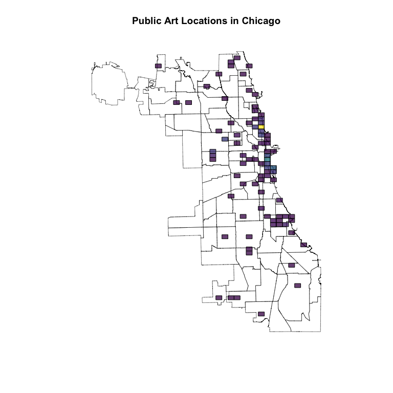

This package provides tools for working with Gustavo Niemeyer’s geohash system of nestable, compact global coordinates based on Z-order curves. The system consists of carving the earth into equally-sized rectangles (when projected into latitude/longitude space) and nesting this process recursively.
Originally, we adapted C++ source from Hiroaki Kawai, but have now rewritten the implementation completely with a new approach in C.
Encoding geohashes
Encoding is the process of turning latitude/longitude coordinates into geohash strings. For example, Parque Nacional Tayrona in Colombia is located at roughly 11.3113917 degrees of latitude, -74.0779006 degrees of longitude. This can be expressed more compactly as:
These 6 characters identify this point on the globe to within 1.2 kilometers (east-west) and .6 kilometers (north-south).
The park is quite large, and this is too precise to cover the park; we can “zoom out” by reducing the precision (which is the number of characters in the output, 6 by default):
gh_encode(11.3113917, -74.0779006, precision = 5L)
Public Art in Chicago
We can use this as a simple, regular level of spatial aggregation for spatial points data, e.g., counting presence of public art throughout the city of Chicago, as captured in this dataset provided by the City:
## first, pull the data internally from https://data.cityofchicago.org tmp = tempfile(fileext = 'csv') api_stem = 'https://data.cityofchicago.org/api/views/' URL = paste0(api_stem, 'sj6t-9cju/rows.csv?accessType=DOWNLOAD') download.file(URL, tmp) library(data.table) art = fread(tmp) # count art by geohash art[ , .N, by = .(geohash = gh_encode(LATITUDE, LONGITUDE, 5L)) # only show the top 10 ][order(-N)][1:10]
## geohash N
## 1: dp3wm 46
## 2: dp3wn 42
## 3: dp3wt 16
## 4: dp3wq 13
## 5: dp3wk 10
## 6: dp3wj 9
## 7: dp3ty 9
## 8: dp3w7 8
## 9: dp3tw 6
## 10: dp3wu 4This is pretty impractical per se (where is dp3wm?); we’ll return to this once we’ve introduced more functionality.
Decoding geohashes
The reverse of encoding geohashes is of course decoding them – taking a given geohash string and converting it into global coordinates. For example, the Ethiopian coffee growing region of Yirgacheffe is roughly at sc54v:
gh_decode('sc54v')
It can also be helpful to know just how precisely we’ve identified these coordinates; the include_delta argument gives the cell half-widths in both directions in addition to the cell centroid:
gh_decode('sc54v', include_delta = TRUE)
## $latitude
## [1] 6.130371
##
## $longitude
## [1] 38.21045
##
## $delta_latitude
## [1] 0.02197266
##
## $delta_longitude
## [1] 0.02197266In terms of latitude and longitude, all geohashes with the same precision have the same dimensions (though the physical size of the “rectangle” changes depending on the latitude); as such it’s easy to figure out thecell half-widths from the precision alone using gh_delta:
gh_delta(5L)
Geohash neighborhoods
One unfortunate consequence of the geohash system is that, while geohashes that are lexicographically similar (e.g. wxyz01 and wxyz12) are certainly close to one another, the converse is not true – for example, 7gxyru and k58n2h are neighbors! Put another way, small movements on the globe occasionally have visually huge jumps in the geohash-encoded output.
Fret not – one tool for helping overcome this is the gh_neighbors function (gh_neighbours is also registered, for the Commonwealthy among us), which will return all of the geohashes adjacent to a given geohash (or vector of geohashes) at the same level of precision.
For example, the Merlion statue in Singapore is roughly at w21z74nz, but this level of precision zooms in a bit too far. The geohash neighborhood thereof can be found with:
gh_neighbors('w21z74nz')
API to other GIS tools in R
geohashTools offers several helper functions for interfacing your geohash objects with GIS tools in R, namely sp and sf. This will facilitate the best part of working with GIS data – the visualizations!
Returning to public art locations in Chicago, we can visualize the spatial aggregations carried out above by converting to sp, combining with a shapefile of Chicago, and plotting:
# needed for plotting library(sp) # needed to load neighborhoods shapefile library(rgdal) # for pretty coloring library(colourvalues) ## first, pull neighborhood shapefiles from https://data.cityofchicago.org tmpf = tempdir() tmp = tempfile(tmpdir = tmpf) shp_url = paste0(api_stem, '9wp7-iasj/files/', 'TMTPQ_MTmUDEpDGCLt_B1uaiJmwhCKZ729Ecxq6BPfM', '?filename=Neighborhoods_2012.zip') download.file(shp_url, tmp) unzip(tmp, exdir = tmpf) chicago = readOGR(tmpf, 'Neighborhoods_2012b') # convert to lat/lon CRS chicago = spTransform(chicago, CRS('+init=epsg:4326')) artSPDF = gh_to_spdf( art[ , .N, by = .(geohash = gh_encode(LATITUDE, LONGITUDE, 6L))], gh_col = 'geohash' ) plot(chicago, lwd = .5, main = 'Public Art Locations in Chicago') plot(artSPDF, col = color_values(artSPDF$N, alpha = 192), add = TRUE)

Chicago connoisseurs will recognize the biggest concentration around Lincoln Park, with another concentration along the waterfront near Millenium/Grant Parks.
The process for sf is similar; just replace gh_to_spdf with gh_to_sf.